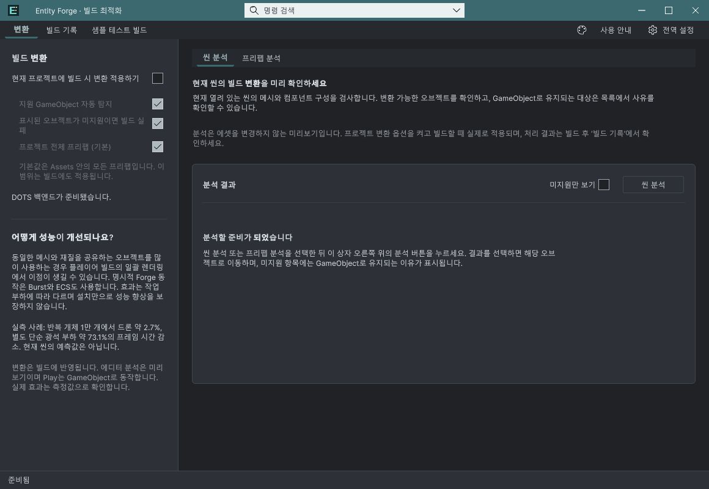
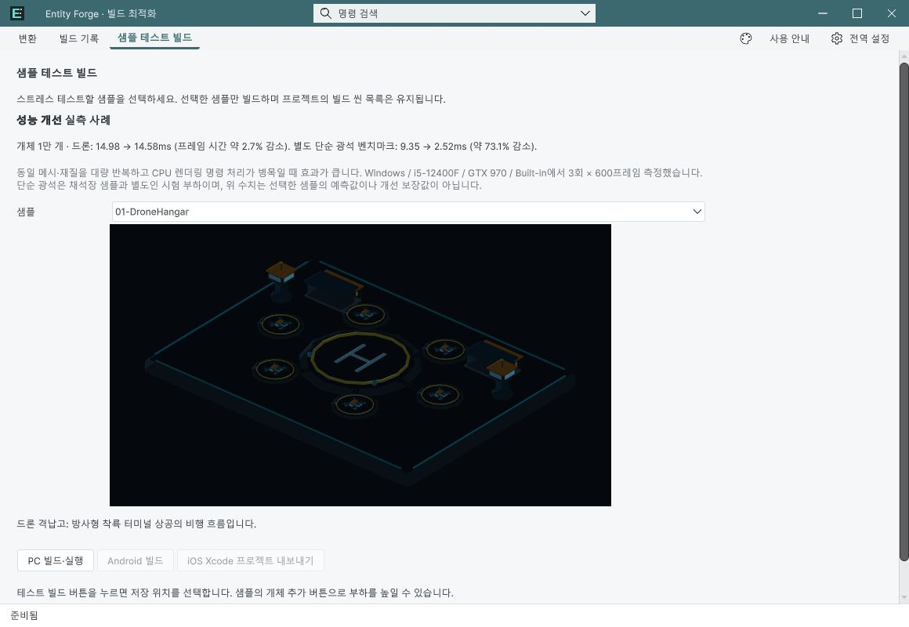

Tracefolio REPORTS & ISSUES
Tracefolio REPORTS & ISSUESEntity Forge에 실측 성능 사례 표시
완료변환과 샘플 테스트 빌드에 반복 개체 1만 개의 실측 프레임 시간 감소 사례를 9언어로 표시했습니다.
작업 결과
변환 화면에는 드론 약2.7%·별도 단순 광석 약73.1%의 실측 사례를 추가했습니다. 샘플 테스트 빌드에는 전후 시간과 조건을 함께 표시했습니다.
변경 내용
적용 내용
일반 테마 텍스트로 작성하고 헬프박스는 추가하지 않았습니다. 같은 메시/재질을 대량 사용하고 CPU 렌더 명령 처리가 병목일 때 이점이 있다는 설명과 Windows/i5-12400F/GTX970/Built-in·3회×600프레임 조건을 표시했습니다. 단순 광석은 채석장 샘플 자체가 아닌 별도 시험이며 현재 선택 씬의 예측값이나 개선 보장값이 아님을 명시했습니다. 9언어 문구와 가이드를 갱신했습니다.
검증
기존 측정 원본 감소율 2.6828895672121766%/73.06403018723651%를 대조해 약2.7%/73.1%로 표시했습니다. UI 카탈로그 519개 키·9언어와 가이드 9개를 검사했습니다. 실제 Unity 6000.0.83f1의 변환·샘플 테스트 빌드 2페이지×9언어×2테마, 총36개 화면을 촬영·검토했습니다. 같은 창을 유지하면서 공유 언어 API로 전환하고 네이티브 키보드 포커스 후 실제 화면을 촬영했습니다. 가려진 초기 촬영은 채택·공개하지 않았습니다. Runtime 코드는 그대로이며 새 플레이어 빌드는 실행하지 않았습니다.
변환 화면 변경 전:

변경 후 같은 한국어·어두운 테마·크기:

샘플 화면의 전후 시간·조건:

문서9개·로컬링크126개·현재캡처18개 이미지/소스 해시 검사 통과. 갱신 패키지428개 자산·26,273,615 bytes·SHA-256 5d34fdcc66ea483aec31641287d52c4f6191c74e41eea623ebbd8a60d61094be를 원본·메타와 대조했고 같은 해시로 공식 업로더 Success를 확인했습니다. 공식 Validator는 28 pass, 1 warning(문서 JPG), 0 fail입니다. 이번 회차에 포털 파일 목록을 다시 열어 확인하지는 않았습니다.
남은 사항
현재 씬의 자동 예상 개선율 기능을 추가한 것은 아닙니다. 표시 수치는 기존 실측 사례이며 부하·하드웨어에 따라 결과가 달라집니다. Submit은 하지 않았습니다. 교훈 검토: 실측과 예측 구분, 가려진 캡처 제외는 기존 전역 규칙을 적용했으며 AGENTS 변경 없음.
작업 시간
- 제안 시간: 10~20분 · 시작 2026-11-04 15:17:48 KST
- 실제로 완료된 시간: 제품·패키지 검증 완료 2026-11-04 15:42:57 KST · 25분 10초 경과. 최초 예상10~20분을 초과했습니다. 화면 작업 충돌/도구 복구·전면 활성화 대기와 패키지 갱신 포함. 보고서 공개 완료는 별도 확인합니다.
- XERJ: 실패 — XERJ node is not running. 현재 UXML·C#·번역 자원은 rg로 확인.